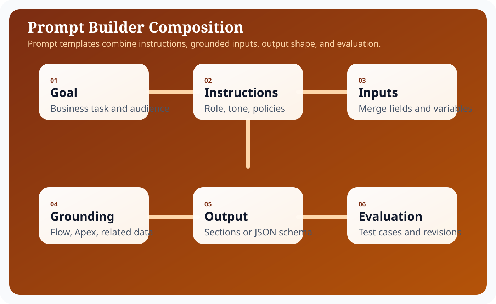
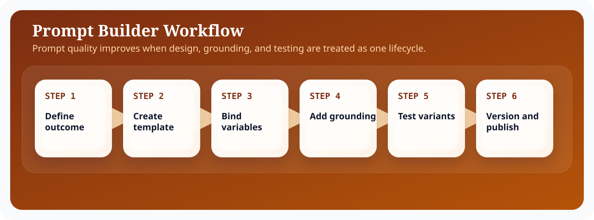

Introduction
Salesforce Agentforce matters because enterprise teams do not need another isolated chatbot; they need an execution surface that can reason over business context, stay inside platform controls, and complete work across Salesforce workflows. In practical terms, that means combining language understanding with CRM records, metadata, automation, and operational policy. The most useful framing is to treat Agentforce as an orchestration layer sitting between human intent and governed business actions.
For architects, admins, and developers, the design question is not whether an LLM can produce fluent output. The harder question is how you bound that output with trusted data, deterministic automations, explicit approvals, and observability. This guide focuses on the implementation tradeoffs, runtime boundaries, and delivery decisions that shape prompting work in Agentforce. That is why successful Agentforce implementations start from architecture, identity, and process design before they focus on polished conversational experiences.
A strong Prompting implementation usually follows the same pattern: define the business objective, identify the records and actions the agent can use, design prompts that encode policy and tone, expose actions through Flow or Apex, and then measure outcomes with operational telemetry. This pattern keeps the solution explainable and creates a handoff model that admins, architects, developers, and service leaders can all understand.
Architecture explanation
Prompt Builder sits at the center of the runtime contract because it translates business instructions into structured model input. It is not just a text editor; it is where tone, constraints, grounding, and output shape are made explicit.
Prompt Builder is the authoring surface where your system instructions, merge fields, Flow outputs, related lists, and Apex data providers become a reusable prompt template. Salesforce positions it as the bridge between trusted CRM context and repeatable generative behaviors.
Agentforce Prompt Builder Deep Dive works best when the architecture separates conversational intent from deterministic execution. Topics and instructions tell the agent what kind of work it is doing. Grounding layers bring in trusted business facts from Salesforce data, knowledge, Data Cloud, or external systems. Actions then convert the plan into platform work through Flow, Apex, or governed API calls. Trust controls wrap the entire path so data access, generated output, and side effects remain observable and policy-bound.

These layers are useful because they help teams decide where a problem belongs. If the answer is wrong, the issue may sit in grounding. If the action is unsafe, the problem sits in permissions or execution validation. If the result is verbose or inconsistent, the issue is often in prompting or output schema. Separating the architecture this way keeps debugging concrete, which is essential when an implementation grows across multiple teams.
In enterprise delivery, it also helps to think about control planes versus data planes. The control plane contains metadata, prompts, access policy, model selection, testing, and release procedures. The data plane contains the live customer conversation, retrieved records, outbound actions, and operational telemetry. This distinction prevents teams from mixing authoring concerns with runtime concerns and makes promotion across sandboxes significantly easier.
The most reliable Agentforce implementations keep the model responsible for reasoning and language, while deterministic platform services remain responsible for data integrity, approvals, and side effects.
Step-by-step configuration
Configuration work succeeds when the team treats Agentforce setup as a sequence of platform decisions rather than a single wizard. The steps below reflect the order that keeps dependencies visible and avoids rework later in the release.

Prompt Builder work improves when you move through a visible design loop: define the outcome, bind inputs, add grounded context, then test and revise before publishing. That order prevents teams from papering over grounding issues with longer instructions.
- Start with the business intent and write a concise system instruction that defines the role, audience, and non-negotiable rules.
- Declare prompt variables that come from Salesforce records or user input and keep naming consistent with downstream flows.
- Attach grounding context such as object fields, knowledge articles, or retrieval snippets, and document why each data source is allowed.
- Specify the desired output shape, including sections, bullet style, required fields, or JSON formatting when downstream automation depends on parsing.
- Create representative evaluation cases that include strong examples, weak examples, and adversarial requests.
- Review prompt revisions like code changes, with version notes, owner names, and rollback awareness.
- Publish the prompt only after output quality, latency, and safety behavior meet the acceptance bar.
Prompt operations become much easier when every template has an owner, a business purpose, a release date, and a rollback note. That metadata sounds bureaucratic until multiple teams begin sharing prompt assets across service, sales, and internal operations.
Code examples
Enterprise teams need concrete implementation patterns because agent behavior eventually resolves into platform metadata and code. Prompt Builder work lives at the boundary between language design and runtime data binding, so the examples below show both template structure and evaluation discipline.
Prompt template example
Role:
You are a Salesforce service operations agent helping support specialists resolve customer issues.
Instructions:
- Ground every recommendation in the supplied CRM and knowledge context.
- If a required fact is missing, ask one concise clarifying question.
- Never invent an entitlement, order status, or policy exception.
Inputs:
- customerProfile
- openCases
- latestInteraction
- policySnippets
Output format:
1. Situation summary
2. Recommended next action
3. Risks or missing data
4. Suggested follow-up messagePrompt evaluation fixture
{
"testCase": "Missing entitlement information",
"expectedBehavior": [
"asks for missing contract context",
"does not promise replacement shipment",
"references service policy language"
]
}Operating model and delivery guidance
Agentforce projects become easier to sustain when the delivery model is explicit. Administrators typically own prompt authoring, channel setup, and low-code automations. Developers own custom actions, advanced integrations, and test harnesses. Architects own the capability boundary, trust assumptions, and release model. Service or sales operations leaders own business acceptance and the definition of success.
That separation matters because long-term quality depends on ownership. If everyone can tune everything, nobody can explain why behavior changed. If prompts, flows, and actions are versioned with release notes, then a regression can be traced back to a concrete modification. This is the same discipline teams already apply to code; Agentforce just expands the surface area that needs that discipline.
It is also useful to define an evidence loop. Capture representative transcripts, measure action success rate, compare containment against downstream business metrics, and review edge cases at a fixed cadence. Over time, this evidence loop becomes more valuable than intuition. It tells you whether a prompt change improved quality, whether a new action reduced manual effort, and whether an escalation rule is too sensitive or too lax.
Teams should also decide how documentation, enablement, and support ownership work after launch. A static runbook for incident handling, a changelog for prompt revisions, and a named owner for every high-impact action are simple controls that prevent ambiguity when the agent starts operating at scale.
Best practices
- Keep instructions short, concrete, and ranked by priority.
- Prefer structured outputs when downstream automation consumes the response.
- Ground prompts on a minimal trusted context set.
- Maintain evaluation fixtures for every prompt revision.
- Separate policy text from style guidance so each can evolve independently.
Conclusion
Prompt Builder is where business intent becomes runtime behavior. Teams that treat prompts as governed assets, with clear context, explicit output structure, and repeatable evaluation, get far more stable Agentforce experiences. The payoff is not just better wording; it is better system behavior.
For Salesforce teams, the practical lesson is consistent: start from business flow, ground the model on trusted enterprise context, expose only the actions you can govern, and measure what the agent actually changes in production. That is how Agentforce becomes a durable platform capability instead of a short-lived proof of concept.